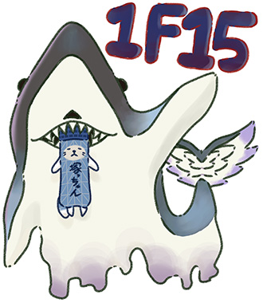
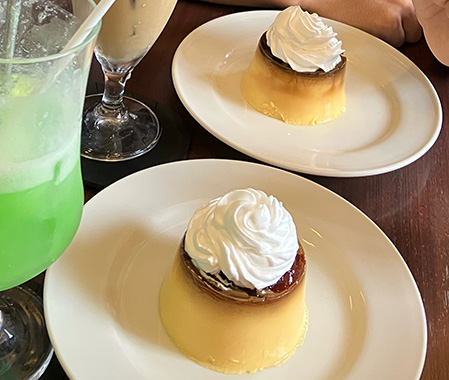
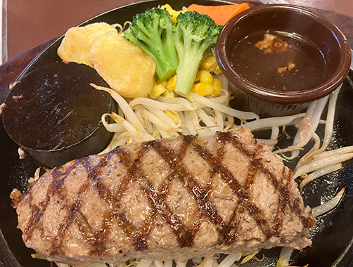

大塚 遥

どこにでもいる大塚に、どこにでもいる遥です。
生粋のメガネっ子を最近卒業しました㊗
- 運動音痴だけど、バドミントンとスケートだけは楽しさがわかります。
- Webクリエイター能力認定試験に合格すること、
その後はwebデザイナーになることが目標です。
まだ確定ではないけど、授業を通して得意を伸ばしていきたいと思っています。
特技
歌うこと！歌一筋です。歌うのが難しい曲ほど好きになりがち。
感情表現やオリジナルの歌い方に力を入れています。
おすすめの曲やアーティストさんをぜひ教えてください☺
- 歌える曲数が多いアーティスト
Mrs. GREEN APPLE┋ずっと真夜中でいいのに。┋Ado etc...
- 最近よく聴くアーティスト
女王蜂┋ヨルシカ┋米津玄師/ハチ etc...
趣味

- 喫茶店巡り： 友人と初めてレトロプリンを食べたときに、その美味しさに惹かれました。クリームソーダは欠かせません。
- 買い物： 百均、SHEIN、コスメにお金を吸われています。最近になってやっと洋服や美容に興味が出始めました。
- カウベル： ここのハンバーグが本当に美味しい！ぜひ行ってみてください。お値段は1200円ほどなのに、お肉が本当に美味しくて感動します。私はいつも単品の「弾力ハンバーグステーキ」に「Aセット」を頼んでいます。八千代に本店、千葉市みつわ台に2号店があります。
リンク→ ・カウベルHP ┋・カウベルInstagram
